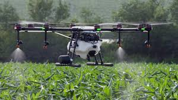

Innovative Approaches to Farming
Modern agriculture has seen a surge of innovative techniques aimed at increasing efficiency, sustainability, and productivity. These approaches incorporate advanced technology, new farming methods, and better management practices. Here’s a look at some of the most impactful modern agricultural techniques:
1. Precision Agriculture
Precision agriculture utilizes technology such as GPS, IoT sensors, and data analytics to monitor and manage crops and soil more precisely. This method helps farmers apply water, fertilizers, and pesticides only where needed, reducing waste and increasing yield.
2. Vertical Farming
Vertical farming is a method where crops are grown in stacked layers or vertically inclined surfaces. This technique maximizes space usage and can be implemented in urban settings, making it a viable option for food production in densely populated areas.
3. Sustainable Farming
Sustainable farming focuses on long-term ecological balance. Techniques include crop rotation, organic farming, and the use of cover crops to maintain soil health and reduce environmental impact.
4. Automation and Robotics
Robotics and automation have transformed modern farming. Automated tractors, drones, and harvesters perform repetitive tasks, allowing farmers to focus on more strategic aspects of their work.
5. Smart Irrigation Systems
Smart irrigation systems use sensors and weather data to optimize water usage. This method ensures that crops receive the right amount of water, which helps conserve resources and improves crop health.
By integrating these modern agricultural techniques, farmers can enhance productivity, reduce environmental impact, and contribute to a more sustainable future.